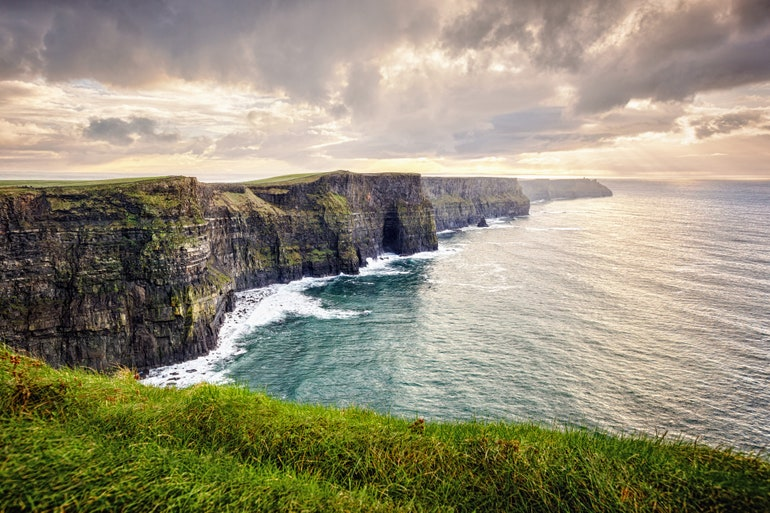

Located in south east asia, philippines is the most visited destination among our customers.
Vibrant weather conditions, Ambient temperature, Friendly people, Affordable living costs,
Fun-filled night life, Astethic views of oceans and greeneries etc are the other things
which attract most vistors. Phillipines is rated among top destinations in world, due to
which number of travellers visiting phillipines is increasing day by day.

Cliffs Of Moher
Ireland
Breathtaking Beauty Of Earth
Located in central europe, Ireland offers more than mediocre experiences to its visitors.
It's chilly weather, beautiful mountains, fresh air, blue lakes, massive oceans, captivating hills,
wild city night life, cheap accomodations, friendly and welcoming people are the other things which
visitors of Ireland are attracted to. Ireland offers a pleasant experience of both village life as well as city life.
Due to these reasons, Ireland is consistiently rated as top beautiful palces of earth.